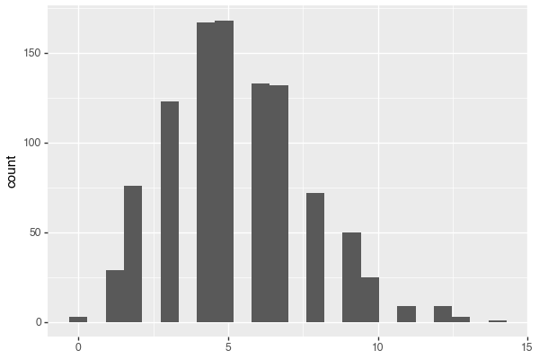
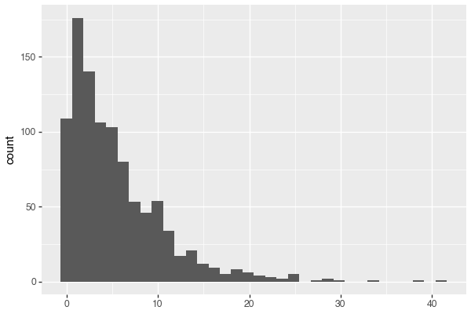
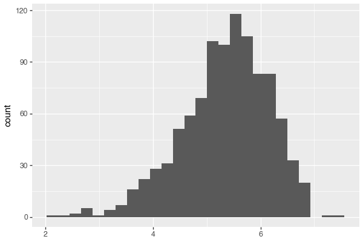
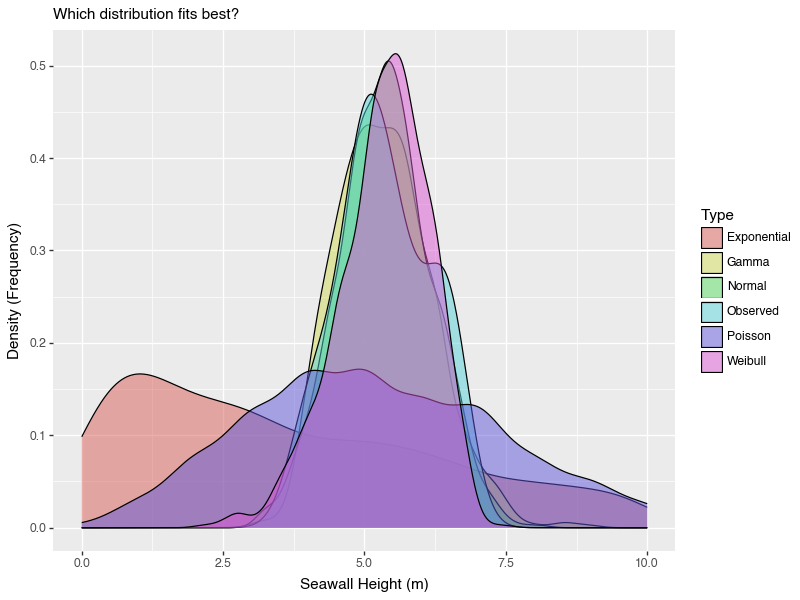

en di# Distributions and Descriptive Statistics in Python
This tutorial introduces distributions and descriptive statistics in Python using pandas and helper functions that mirror R’s syntax.
1 Our Data
## 0 4.5
## 1 5.0
## 2 5.5
## 3 5.0
## 4 5.5
## 5 6.5
## 6 6.5
## 7 6.0
## 8 5.0
## 9 4.0
## dtype: float645 Spread (2)
8 Common Distributions
8.1 Normal
mynorm = rnorm(n=1000, mean=mymean, sd=mysd)
h1 = hist(mynorm)
h1.save("plotnine_figures/02_hist_normal.png", dpi=100, width=6, height=4)
Figure 1: Normal distribution histogram
8.2 Poisson
mypois = rpois(n=1000, mu=mymean)
h2 = hist(mypois)
h2.save("plotnine_figures/02_hist_poisson.png", dpi=100, width=6, height=4)

Figure 2: Poisson distribution histogram
8.3 Exponential
myrate_e = 1 / sw.mean()
myexp = rexp(n=1000, rate=myrate_e)
h3 = hist(myexp)
h3.save("plotnine_figures/02_hist_exponential.png", dpi=100, width=6, height=4)

Figure 3: Exponential distribution histogram
8.4 Gamma
myshape = sw.mean()**2 / sw.var()
myrate = 1 / (sw.var() / sw.mean())
mygamma = rgamma(n=1000, shape=myshape, rate=myrate)
h4 = hist(mygamma)
h4.save("plotnine_figures/02_hist_gamma.png", dpi=100, width=6, height=4)
Figure 4: Gamma distribution histogram
8.5 Weibull
from scipy import stats as fitdistr
myshape_w, loc, myscale_w = fitdistr.weibull_min.fit(sw, floc=0)
myweibull = rweibull(n=1000, shape=myshape_w, scale=myscale_w)
h5 = hist(myweibull)
h5.save("plotnine_figures/02_hist_weibull.png", dpi=100, width=6, height=4)

Figure 5: Weibull distribution histogram
9 Comparing Distributions
mysim = p.concat([
p.DataFrame({'x': sw, 'type': "Observed"}),
p.DataFrame({'x': mynorm, 'type': "Normal"}),
p.DataFrame({'x': mypois, 'type': "Poisson"}),
p.DataFrame({'x': mygamma, 'type': "Gamma"}),
p.DataFrame({'x': myexp, 'type': "Exponential"}),
p.DataFrame({'x': myweibull, 'type': "Weibull"})
])
g1 = (ggplot(mysim, aes(x='x', fill='type')) +
geom_density(alpha=0.5) +
labs(x='Seawall Height (m)', y='Density (Frequency)', subtitle='Which distribution fits best?', fill='Type'))
g1.save("plotnine_figures/02_density_comparison.png", dpi=100, width=8, height=6)
Figure 6: Distribution comparison
g2 = g1 + xlim(0,10)
g2.save("plotnine_figures/02_density_comparison_xlim.png", dpi=100, width=8, height=6)

Figure 7: Distribution comparison with x-axis limits